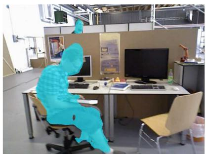
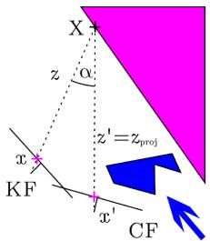

阶段 H · 专题支线（动态环境）/ Lesson 0153
DynaSLAM 与 DS-SLAM · 动态 SLAM 的开山
两篇同年（2018）的奠基作，第一次把「几何 + 语义」双通道拧进 ORB-SLAM2 🧱
🎯 主题：动态怎么判定（结合路线）· 命名区分
👥 作者：Bescos 等 / Yu 等
📅 2018 · RA-L+IROS / IROS
本节目标
读完你应该能：① 分清楚 DynaSLAM(2018) 与 DS-SLAM(2018) 这两个只差一个空格的名字；② 说清「结合路线」是怎么用几何与语义两条通道互相纠偏的；③ 背出深度一致性阈值 τ_z = 0.4 m 的物理意义；④ 说出 DS-SLAM 五线程里「独立语义线程」为什么关键；⑤ 记住两种「判错」代价（误删静止可动物体 vs 漏判真动物体）。
和前面课程怎么接
两篇都建在第三季 0043–0045 的 ORB-SLAM2 之上 ——做法是「在 ORB-SLAM2 外面套一层动态剔除」，这类「打补丁」的结构性代价本节要讲清。动态这件事第一季 0005（SW-NDT 激光侧） 就碰过，本节是视觉侧 的系统做法，要点名对照两条路线。第七季 0147 的 SAM 分割，正是本季「语义当零件」的现成例子——但 2018 年它们用的是更早的 Mask R-CNN / SegNet。
1. 先拆一个命名坑：DynaSLAM 还是 DS-SLAM？
本季动态块有四个名字两两易混，第一篇就先排雷。今天这两位是：
DynaSLAM（2018）
Bescos、Civera、Neira 等。系统名写成 DynaSLAM （一个词，无空格）。做法：几何（多视角深度一致性）+ 语义（Mask R-CNN） 双通道，判定后把动态物体删掉，并对被遮挡背景做 inpainting。
DS-SLAM（2018）
Yu、Liu 等。系统名写成 DS-SLAM （有空格，D 和 S 之间）。做法：5 线程并行 ，语义用 SegNet（只把「人」默认当动态），几何用对极约束运动一致性，并输出稠密语义 octo-tree 地图。
记忆口诀 ：Dyna SLAM 是「Dynamic 的缩写、没空格、靠 Mask R-CNN + 深度一致性 + inpaint」；DS -SLAM 是「有空格、靠 SegNet 只剔人 + 五线程 + 稠密语义地图」。后面还会出现 DynaSLAM II（2021，追踪而非删除） 、Dynamic SLAM（Wen 2023，室外） 、Dynam-SLAM（Yin 2023，VISLAM） ——写课时一律用「全称 + 第一作者 + 年份」锚定，避免念混。
两者共同的身份是：动态 SLAM 结合路线（几何 + 语义）的开山之作 。下面分别拆。
2. DynaSLAM：把「几何」和「语义」两条通道拧在一起
生活类比：你要判断教室里哪张椅子「其实被人搬动过」。一个办法是看照片 ——如果有人坐着，就假定这张椅子可能动（语义先验）；另一个办法是量尺寸 ——把昨天和今天同一处的深度对一对，差太多就说明它动了（几何证据）。DynaSLAM 两个都用，再取并集/交集。
语义通道
Mask R-CNN（MS COCO 18 类 movable 物体：人、车…）逐像素出实例 mask。这些类直接假定为潜在动态 ——这是「先验」，不是「此刻在动」。
几何通道
多视角深度一致性：把已有地图点投影到新帧，比较「投影深度」与「实测深度」。差太多就判动态。不依赖训练数据 。
怎么合
论文给出 N（纯几何）、G（纯语义）、N+G（结合）三种组合。结合模式互相纠偏：语义能补低纹理处的几何失效，几何能保留停着的车 （语义会误删）。
删完干嘛
判出的动态区域被 mask 掉，只用静态点做跟踪/建图；被遮挡背景用前 20 个关键帧信息做 inpainting，得到可长期使用的静态地图。
语义先验只说「类别」，不说「此刻动没动」 人 → 红：默认动态 车 → 黄：可动类 椅 → 黄：可动类 树 → 绿：静态类 问题：语义只回答「它是哪一类」 · 红框的人若站着不动，语义仍会判它「动态」→ 误删（损失静态特征）
· 黄框的停驶车，其实对定位有用，却被「可动类」先验误删
→ 所以需要几何通道（深度一致性）来「保住其实没动的车」
这张图在画什么： 一条街景，下面用颜色标出语义分割给每类打的标签：人=红（默认动态）、车/椅子=黄（可动类）、树=绿（静态类）。
怎么看这张图： ① 注意红色和黄色只代表「类别」，不代表「此刻在动」 ——这是语义先验最粗的地方；② 站在原地的「人」、停在路边的「车」都会被先验判成「可能动」，于是被删，但它们其实是好用的静态特征；③ 这正是结合路线存在的理由：用几何通道把「其实没动的可动物体」救回来 。④ 图下方橙框点明了两种误删。
要记住的一句话： 语义先验只说「它是哪一类」，不说「它现在动没动」——这是所有语义派动态 SLAM 的原罪。

原图注（DynaSLAM Fig. 4）： Detection and segmentation of dynamic objects using multi-view geometry (left), deep learning (middle), and a combination of both geometric and learning methods (right). Notice that Fig. 4(a) cannot detect the person behind the desk, Fig. 4(b) cannot segment the book carried by the person, and the combination of the two (Fig. 4c) is the best performing.
怎么看这张图： 这是结合路线最直观的证据。左图（纯几何）漏掉了桌子后面的人——因为低纹理/遮挡处几何失效；中图（纯语义）认出了人却漏掉了人手里拿的书——语义分割的实例边界不够细；右图（结合）把人和书都找全了。它说明两条通道不是简单叠加，而是互补短板 。结合模式（N+G）也是论文精度最高的配置（walking_xyz 上 ATE 0.015 vs ORB-SLAM2 0.459，提升 96.73%）。
要记住的一句话： 纯几何漏遮挡人、纯语义漏手中书，结合才最准——这是「几何+语义」成为动态 SLAM 主流范式的根本理由。
3. 几何通道的核心：深度一致性阈值 τ_z = 0.4 m
DynaSLAM 几何通道的判断非常具体。它把一个地图点从关键帧投影到当前帧，算出「投影深度 z_proj」和「当前帧实测深度 z′」，两者之差超过阈值就判动态：
这句话在说什么 ：它在算「同一个点，上一帧我估计它在哪、这一帧实测它在哪，差了多远」。如果差的深度超过 0.4 米，就说明这个点不是同一个静止点（它移动了，或者我的位姿错了）。0.4 m 不是拍脑袋——论文用 30 张人工标注的 TUM 图，最大化「0.7×准确率 + 0.3×召回率」选出来的。另外，视差角大于 30° 的匹配会被忽略，且只用与当前帧重叠 ≥5 个关键帧的点，避免早期不稳定地图点。
同一块地砖，两帧深度差超过 0.4 m 就判「动了」 关键帧 A 地砖
实测深度 z′ = 3.0 m （这一块没动）
当前帧 B 地砖
投影深度 z_proj = 3.1 m （错位 0.1 m，远小于 0.4）
容忍带 ±0.4 m 差 0.1 m → 落在带内 → 判静态
若差 = 0.9 m → 超出带 → 判动态 τ_z = 0.4 m：数据驱动选出，不是经验值
这张图在画什么： 左边是上一帧（关键帧 A）里一块地砖的实测深度 3.0 m；右边是当前帧 B 里同一块的投影深度 3.1 m。中间一条「容忍带 ±0.4 m」。
怎么看这张图： ① 两帧差 0.1 m，落在绿带内 ，所以判「这块没动」（静态）；② 下方红框演示一个真动点：差 0.9 m，超出带 ，判动态；③ 关键不是「差多少」，而是「差是否超过 0.4 m 这个门槛」——这个门槛是论文用 30 张人工标注图调出来的，目的在平衡「别漏真动」和「别误删静止」。
要记住的一句话： 深度一致性阈值 τ_z = 0.4 m 是 DynaSLAM 几何通道的「判动开关」，且是数据驱动选定的。

原图注（DynaSLAM Fig. 3）： Keypoint x from the Key Frame (KF) is projected into the Current Frame (CF) using its depth and camera pose, resulting in point x′ with depth z′. The projected depth z_proj is then computed. A pixel is labeled as dynamic if the difference Δz = z_proj − z′ is greater than a threshold τ_z.
怎么看这张图： 这张就是上面那张自绘图的论文原版：它画的是把关键帧里的特征点 x 用深度和位姿投影到当前帧，得到投影深度 z_proj，再和实测 z′ 比。差超过 τ_z 就标红（动态）。注意它标的是「单像素级」的判断——粒度是逐像素 + 实例级 ，比纯几何的「点级」更细。
要记住的一句话： 原图 Fig. 3 正是 τ_z = 0.4 m 这个公式的几何来源，自绘图把它翻译成了「地砖深度差」的日常画面。
4. DS-SLAM：把语义做成「独立实时线程」
DS-SLAM 和 DynaSLAM 同年，思路相似（也是几何+语义），但工程上更强调「实时 」。它的做法是 5 个并行线程：
跟踪 / 局部建图 / 回环
这三线程与 ORB-SLAM2 基本一致，是「地基」。
语义分割线程（独立）
SegNet（PASCAL VOC 20 类）独立并行 跑，不阻塞主流程——这是它能 ~16.8 fps 的关键。
运动一致性检查
对极约束：对每对匹配点算到极线的距离，超过阈值判动态。和语义互为二次确认。
稠密语义 octo-tree 地图
用 log-odds 占据概率维护每个点的动静状态，回环时把分割结果融进地图。
几何通道的对极距离判据是：
这句话在说什么 ：对于一对匹配点，它算「这个点偏离对极线多远」（分母是归一化项，避免极线长短不一带来的尺度偏差）。偏离越远，说明它不满足「静态场景的对极约束」，越可能是动态点。语义线程先把「人」区域标记出来，几何线程再用这个对极距离二次确认，两者联合降低单通道误判。
DS-SLAM 的一个局限（也是语义先验过窄的代价） ：它默认只把「人(person)」当动态 。如果场景里动态物体主要是车，收益就有限——这是和 DynaSLAM（18 类 movable）不同的取舍。另外它要为每个回环重建 octo-tree 语义地图，计算更复杂。
原图注（DS-SLAM Fig. 1）： The overview of DS-SLAM. The raw RGB image is utilized to semantic segmentation and moving consistency check simultaneously. Then remove outliers and estimate pose. Semantic octo-tree map is built in an independent thread based on the pose, depth image, and semantic segmentation results.
怎么看这张图： 它把「RGB 进 → 语义分割 + 运动一致性检查同时做 → 剔除离群点 → 估计位姿」这条主链画得很清楚，右下角还有独立的语义 octo-tree 地图线程。重点看「independent thread 」——语义分割是和跟踪并行的，所以不拖慢主帧率。这是 DS-SLAM 相对 DynaSLAM「串行跑 Mask R-CNN」在实时性上的结构差异。
要记住的一句话： DS-SLAM 的卖点是「独立语义线程 + 五线程并行」，使它约 16.8 fps，接近实时。
原图注（DS-SLAM Fig. 6）： Dense 3D semantic octo-tree map.
怎么看这张图： 这是 DS-SLAM 的「额外产出」——不只是一张贴好标签的语义图，而是一张稠密的三维语义八叉树地图 。每个体素用 log-odds 占据概率维护「这里有没有东西、是静是动」。这一点比 DynaSLAM（只出静态彩色图）往前走了一步：它把语义和几何真正融进了同一个可查询的地图结构，可供上层任务（如导航避障）直接用。
要记住的一句话： DS-SLAM 不只「剔除动态」，还顺手建出一张带语义标签的稠密三维地图——这是它相对 DynaSLAM 的增量贡献。
互动一：DynaSLAM 的几何通道，阈值 τ_z 调得过大（比如 2 m）会怎样？
下面哪句最准？更易漏判真动物体 更易误删静止车
正确。τ_z 是「判动的门槛」：门槛越高，越多的真动点（深度差小于 2 m 的）会被当成「没动」而漏掉，污染 BA——这正是精读材料说的「漏检的崩盘」。反之门槛太低才会把静止车误删（保守删除的亏本）。所以 τ_z 本质是「漏检 vs 误删」的旋钮。
不对。把 τ_z 调大，是「更容易放过动点」，不会「更易误删静止车」。误删静止车来自「门槛太低 + 语义先验过宽」——静止车深度差很小，门槛低时也会被当成动。门槛大反而会让静止车更安全（更不容易被判动）。
5. 代价账：结合路线亏在了哪
结合路线很强，但「代价账」必须算清。两篇共同的亏法，以及各自的特例：
代价项
DynaSLAM（N+G）
DS-SLAM
实时性
高精 N+G 模式需 Mask R-CNN(195ms)+几何(333ms)+inpaint(208ms)，远非实时；仅纯几何 Low-Cost 接近实时
主线程 ~59.4 ms/帧（≈16.8 fps），靠语义线程独立并行
静态场景略亏
作者指出静态序列上略逊 ORB-SLAM2：语义通道会删掉「可动类」特征（即便它没动）
同样存在把静止的人误删的风险
语义边界
Mask R-CNN 18 类 movable
SegNet 仅 20 类，且动态只取 person
高层输出
inpainting 出静态地图，不追踪动态物体
稠密语义 octo-tree 地图（额外产出）
两种判错的代价（本项目铁律） ：① 误删静止可动物体 （停驶车、站着的人）——损失本可用于定位的静态特征，DynaSLAM/DS-SLAM 在静止可动物体场景会略降；② 漏判真动物体 ——污染 BA，使整张地图崩。结合路线用「几何保住静止车」缓解①、用「语义缩小搜索范围」压制②，但实时性 始终是结合路线最贵的那笔账。
互动二：为什么 DynaSLAM/DS-SLAM 都「不改 SLAM 内核，只在外面加一层」？
下面哪句最准？内核太稳不想动 补丁法最快见效
正确，但说法不完整——更准的说法是「补丁法最快见效」。ORB-SLAM2 的 BA、回环已经很成熟，2018 年最务实的做法是「在外层把动点识别出来、喂干净的数据给内核」，而不是重写优化器。这也带来结构性代价：动态处理的好坏完全取决于外层补丁，内核对动态一无所知。
更准确。2018 年的两篇都是「把动态剔除做成一个外层模块，只对 ORB-SLAM2 喂干净点」。原因不是内核完美，而是「在成熟内核外包一层」是当时最快出成果的路。代价是：动态判断与位姿优化是脱耦的两段，无法像后来 DynaSLAM II 那样「让动态物体反过来帮定位」。
一帧画面要花掉多少毫秒：这条流水线的账单
0
100
200
300
400 ms
语义分割（Mask R-CNN）
195 ms
多视图几何检查
333.68 ms
背景修补（inpainting）
208.09 ms
仅几何的轻量模式
1.69 ms（几乎免费）
33 ms ≈ 实时上限（30 FPS）
高精度的「几何＋语义＋修补」三件套加起来约 737 ms/帧 —— 离实时差了 20 多倍
想实时只能退到「只用几何」的 1.69 ms 档，精度就跟着降
这就是作者自己列的未来工作：实时化、用更轻的运动检测器、更快的修补
安静场景里的亏本：即使画面里没人，语义那 195 ms 也照样要付
实测在静态序列上，DynaSLAM 反而略逊于原来的 ORB-SLAM2
这张图在说什么： 把 DynaSLAM 一帧里干的三件重活按真实耗时画成条形图：语义分割 195 毫秒、多视图几何 333.68 毫秒、背景修补 208.09 毫秒；而它那个「只用几何」的轻量档只要 1.69 毫秒。
怎么看这张图： ① 先看黄色虚线——那是 33 毫秒的实时门槛；三条长条全部远远越过它；② 逐条读右边标出的毫秒数，这就是这一节的「代价账」；③ 注意最下面那条最短的绿条（1.69 ms），它说明精度与速度是同一张账单上的两栏，想实时就得退档；④ 再读底部两行：即使画面里根本没有运动物体，语义那 195 毫秒照样要付——所以作者实测发现静态序列上它反而略输给原版 ORB-SLAM2。
要记住的一句话： 动态处理不是「白拿的鲁棒性」，它的价钱写在每帧的毫秒数里，而且在安静场景里是净亏。
6. 读完你应该能回答
DynaSLAM(2018) 与 DS-SLAM(2018) 名字差在哪？各自靠什么语义网络、默认把哪类当动态？
「结合路线」是怎么用几何与语义两条通道互相纠偏的？纯几何和纯语义各自漏什么？
深度一致性阈值 τ_z = 0.4 m 在算什么？为什么它必须是数据驱动选出的？
DS-SLAM 的「独立语义线程 + 五线程并行」解决了什么、又留下了什么局限？
结合路线的两种「判错代价」分别是什么？为什么实时性是它最贵的一笔账？
这两篇为什么都「不改 SLAM 内核、只在外面加一层动态剔除」？这种结构有什么代价？
课后练习（答案收起，点开看解析）
为什么说「语义先验只说类别、不说此刻动没动」是结合路线存在的根本理由？
展开查看答案
因为语义分割只能回答「这是人/车（可动类）」，回答不了「这个人此刻站着没动、这辆车停着」。如果只靠语义，会把站着的人和停着的车都删掉，损失对定位有用的静态特征。所以必须再引入几何通道（深度一致性/对极约束）来判断「它到底动没动」，把其实没动的可动物体救回来。两条通道互补，才长成「结合路线」。
DS-SLAM 默认只把「人」当动态，这在什么场景下会吃亏？请举一个具体例子。
展开查看答案
在动态物体主要是「车」而非「人」的场景会吃亏。例如停车场里一辆行驶中的汽车，DS-SLAM 的语义通道默认不把它当动态（只有 person 被默认动态），于是几何通道要单独扛「判这辆车在动」的任务；若该车纹理少、几何证据弱，就可能被漏判，污染 BA。这是它相对 DynaSLAM（18 类 movable）的取舍代价。
如果让你把 τ_z 从 0.4 m 改成 0.1 m，对「停着的车」和「真在走的人」分别会有什么影响？
展开查看答案
τ_z 调小 = 判动门槛更严。停着的车：深度差本就很小（接近 0），仍会判静态，不受影响（反而更安全）；真在走的人：若其深度差在 0.1–0.4 m 之间（慢速/远距），原来判动、现在判静态 → 被漏判，污染 BA。所以调小 τ_z 是「宁可误删、不可漏检」的取向，会加剧「漏检崩盘」风险，对慢速动态物体不友好。
对比 DynaSLAM 与 DS-SLAM 的「额外产出」：一个做 inpainting，一个建 octo-tree 语义地图，两者对下游任务的意义有何不同？
展开查看答案
DynaSLAM 的 inpainting 是为了「补出被动态物体遮挡的背景」，得到一张干净的、可长期使用的静态地图——它服务的是「定位/建图本身的长期一致性」。DS-SLAM 的 octo-tree 语义地图则把「语义标签 + 占据概率」存进三维结构，下游导航/避障可以直接查询「前方法是椅子还是墙、是静是动」。前者是「让地图更干净」，后者是「让地图更可用」，方向不同。